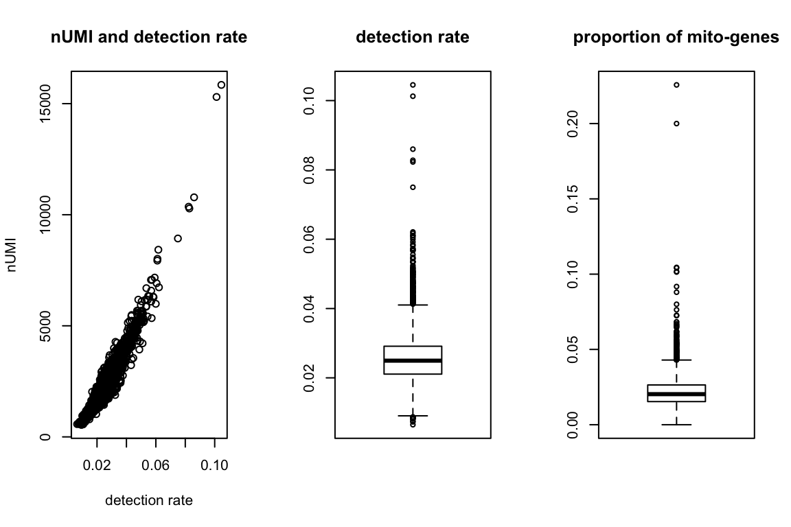
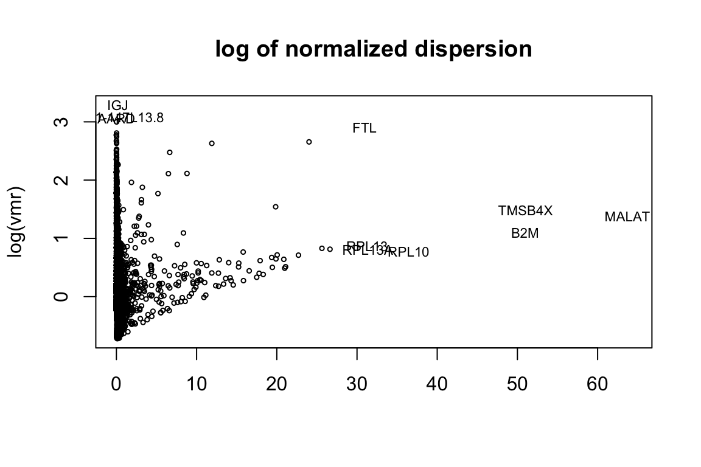
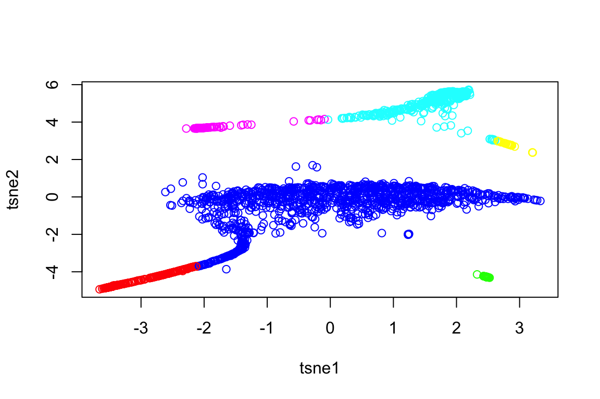
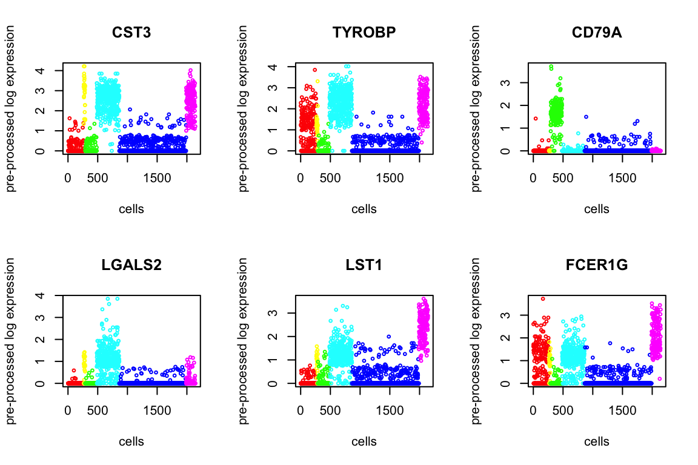
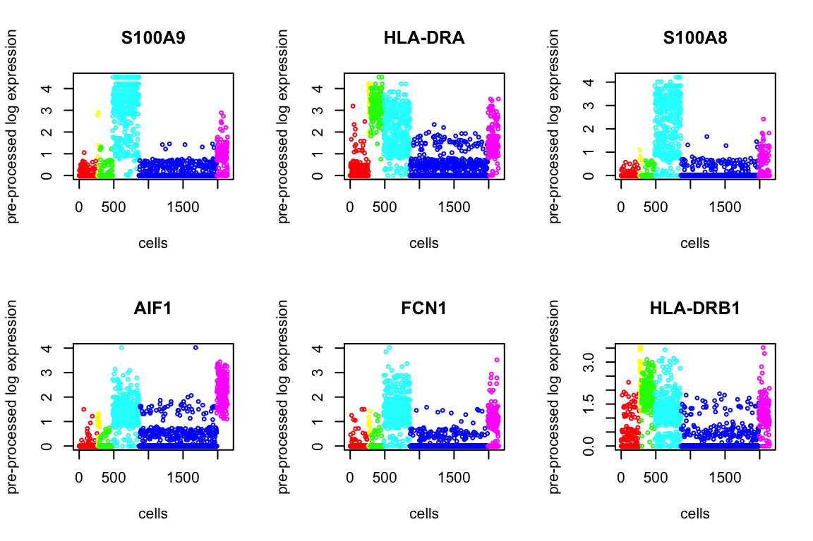
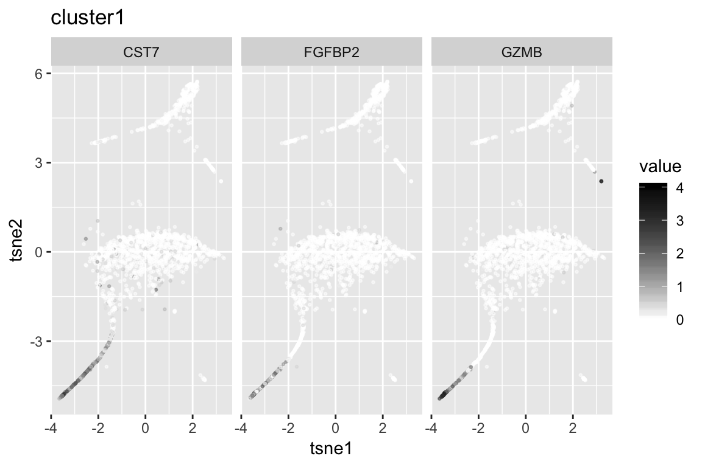
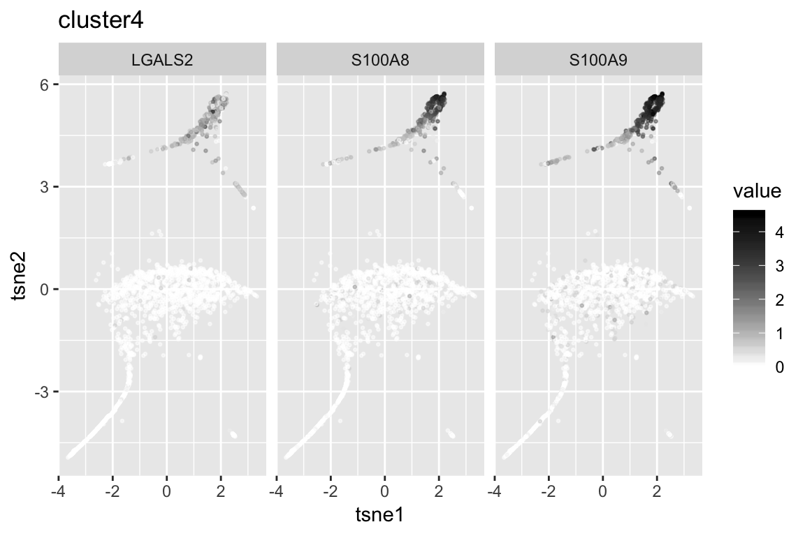
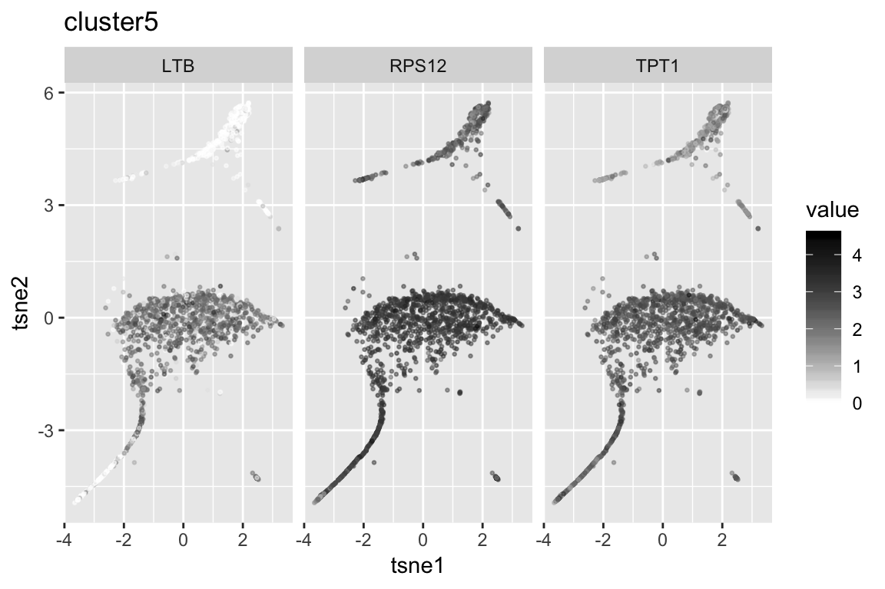
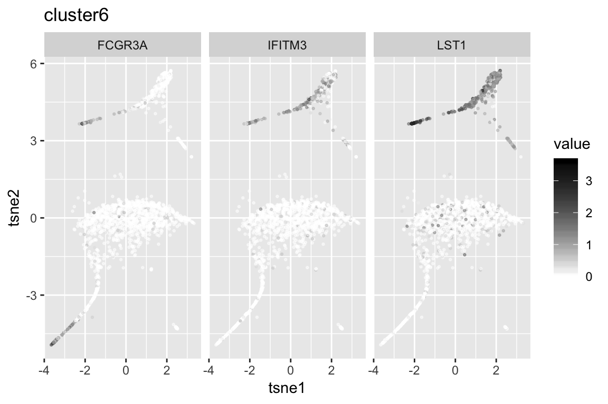

Last updated: 2018-09-12
workflowr checks: (Click a bullet for more information) ✖ R Markdown file: uncommitted changes
The R Markdown file has unstaged changes. To know which version of the R Markdown file created these results, you’ll want to first commit it to the Git repo. If you’re still working on the analysis, you can ignore this warning. When you’re finished, you can run wflow_publish to commit the R Markdown file and build the HTML.
✔ Environment: empty
Great job! The global environment was empty. Objects defined in the global environment can affect the analysis in your R Markdown file in unknown ways. For reproduciblity it’s best to always run the code in an empty environment.
✔ Seed:
set.seed(20180618)
The command set.seed(20180618) was run prior to running the code in the R Markdown file. Setting a seed ensures that any results that rely on randomness, e.g. subsampling or permutations, are reproducible.
✔ Session information: recorded
Great job! Recording the operating system, R version, and package versions is critical for reproducibility.
✔ Repository version: a34244a
wflow_publish or wflow_git_commit). workflowr only checks the R Markdown file, but you know if there are other scripts or data files that it depends on. Below is the status of the Git repository when the results were generated:
Ignored files:
Ignored: .Rhistory
Ignored: .Rproj.user/
Ignored: R/.Rhistory
Ignored: analysis/.Rhistory
Ignored: analysis/pipeline/.Rhistory
Untracked files:
Untracked: ..gif
Untracked: .DS_Store
Untracked: R/.DS_Store
Untracked: analysis/.DS_Store
Untracked: analysis/10x_labeled.Rmd
Untracked: analysis/normalization_test.R
Untracked: analysis/pipeline/0_dropseq/
Untracked: analysis/pipeline/1_10X/
Untracked: analysis/pipeline/2_zeisel/
Untracked: analysis/pipeline/3_smallsets/
Untracked: analysis/slsl_10x.Rdata
Untracked: analysis/slsl_dropseq.Rdata
Untracked: analysis/small.Rmd
Untracked: analysis/writeup/bibliography.bib
Untracked: analysis/writeup/draft1.aux
Untracked: analysis/writeup/draft1.bbl
Untracked: analysis/writeup/draft1.blg
Untracked: analysis/writeup/draft1.log
Untracked: analysis/writeup/draft1.out
Untracked: analysis/writeup/draft1.pdf
Untracked: analysis/writeup/draft1.synctex.gz
Untracked: analysis/writeup/draft1.tex
Untracked: analysis/writeup/jabbrv-ltwa-all.ldf
Untracked: analysis/writeup/jabbrv-ltwa-en.ldf
Untracked: analysis/writeup/jabbrv.sty
Untracked: analysis/writeup/naturemag-doi.bst
Untracked: analysis/writeup/wlscirep.cls
Untracked: data/unnecessary_in_building/
Untracked: docs/figure/example_10x.Rmd/.DS_Store
Untracked: docs/figure/large.Rmd/
Untracked: dropseq_heatmap.pdf
Untracked: src/.gitignore
Unstaged changes:
Modified: NAMESPACE
Modified: analysis/large.Rmd
Modified: analysis/pipeline/.DS_Store
Modified: analysis/writeup/.DS_Store
Modified: data/.DS_Store
Modified: docs/figure/.DS_Store
Modified: man/UMI_normalize.Rd
| File | Version | Author | Date | Message |
|---|---|---|---|---|
| Rmd | 03a7f75 | tk382 | 2018-09-12 | notation change, adding visualization, general code structure |
Read data and keep the gene names separately.
orig = readMM('data/unnecessary_in_building/pbmc3k/matrix.mtx')
orig_genenames = read.table('data/unnecessary_in_building/pbmc3k/genes.tsv',
stringsAsFactors = FALSE)$V2First, “explore.data” function shows the distribution of the number of UNI, detection rate, and the proportion of mitochondrial genes for each cell. Then users can decide on the cut-offs to filter the cells using “cell.filter” function, which returns the indices of cells that satisfy the input criteria.
summary = explore_data(orig, orig_genenames)
ind = cell_filter(summary,
nUMI.thresh = c(0,10000),
det.rate.thresh = c(0.02, 0.067),
percent.mito.thresh = c(0,0.1))
tmpX = orig[,ind]Next find variable genes using normalized dispersion. First, “plot.dispersion” function shows the distribution log of normalized dispersion (variance to mean ratio) against the gene means. The convention is to normalize the dispersion by converting them to z-scores, but one can also use median and MAD (median absolute deviation) which is less sensitive to outliers. Based on the scatterplot, users can decide on the cut-offs for the mean expression value and the dispersion to use “gene.filter” function. “gene.filter” function returns the new expression level matrix of filtered genes and the corresponding gene names.
disp = plot_dispersion(X = tmpX,
genenames = orig_genenames,
bins=NA,
median = FALSE,
outliers.mean.thresh = c(30,Inf),
outliers.vmr.thresh = c(3,Inf))
X = gene_filter(tmpX, orig_genenames, disp,
mean.thresh=c(0.001, Inf),
dispersion.thresh = c(0.5, Inf))
genenames = X$genenames
X = X$XUse quantile-normalization to make the distribution of each cell the same. “quantile.normalize” function also performs the log transformation.
X = quantile_normalize(as.matrix(X))Run the clustering algorithm SLSL based on the filtered matrix. It automatically plots the final tSNE plot based on the Laplacian matrix.
out = SLSL(X, verbose=FALSE)
Using Kruskal test, we order the p-values to find the top differentially expressed genes. Below we present 6.
degenes = de_genes(X, genenames, out$result, top.n=100, plot=12)
head(degenes) de_genes log10p
1 CST3 Inf
2 TYROBP Inf
3 CD79A Inf
4 LGALS2 Inf
5 LST1 322.2270
6 FCER1G 314.1417
clust1_genenames clust1_log10p
1 GZMB 280.5690
2 FGFBP2 249.4204
3 CST7 239.9105
4 PRF1 220.0278
5 NKG7 213.0282
6 CCL4 167.3846 clust2_genenames clust2_log10p
1 SERPINF1 152.41836
2 FCER1A 143.19380
3 ENHO 79.10624
4 CLEC4C 77.80362
5 LRRC26 52.64777
6 SCT 52.64777 clust3_genenames clust3_log10p
1 CD79A Inf
2 HLA-DQA1 181.1766
3 CD79B 178.5284
4 HLA-DQB1 147.7264
5 FCRLA 134.5673
6 CD74 105.0767
clust4_genenames clust4_log10p
1 LGALS2 Inf
2 S100A8 297.9284
3 S100A9 259.9251
4 FCN1 250.8238
5 LYZ 207.8968
6 CST3 204.0437
clust5_genenames clust5_log10p
1 TPT1 203.0014
2 LTB 202.5040
3 RPS12 192.9751
4 RPS27A 165.8921
5 RPL10A 164.1815
6 RPS5 154.5735
clust6_genenames clust6_log10p
1 FCGR3A 144.34980
2 IFITM3 124.06185
3 LST1 118.87115
4 AIF1 107.61418
5 FCER1G 107.49510
6 C5AR1 77.95185sessionInfo()R version 3.5.1 (2018-07-02)
Platform: x86_64-apple-darwin15.6.0 (64-bit)
Running under: macOS Sierra 10.12.5
Matrix products: default
BLAS: /Library/Frameworks/R.framework/Versions/3.5/Resources/lib/libRblas.0.dylib
LAPACK: /Library/Frameworks/R.framework/Versions/3.5/Resources/lib/libRlapack.dylib
locale:
[1] en_US.UTF-8/en_US.UTF-8/en_US.UTF-8/C/en_US.UTF-8/en_US.UTF-8
attached base packages:
[1] parallel stats4 stats graphics grDevices utils datasets
[8] methods base
other attached packages:
[1] bindrcpp_0.2.2 gridExtra_2.3
[3] SC3_1.8.0 SingleCellExperiment_1.2.0
[5] SummarizedExperiment_1.10.1 DelayedArray_0.6.2
[7] BiocParallel_1.14.2 Biobase_2.40.0
[9] GenomicRanges_1.32.6 GenomeInfoDb_1.16.0
[11] IRanges_2.14.10 S4Vectors_0.18.3
[13] BiocGenerics_0.26.0 SCNoisyClustering_0.1.0
[15] plotly_4.8.0 gplots_3.0.1
[17] diceR_0.5.1 Rtsne_0.13
[19] igraph_1.2.2 scatterplot3d_0.3-41
[21] pracma_2.1.4 fossil_0.3.7
[23] shapefiles_0.7 foreign_0.8-71
[25] maps_3.3.0 sp_1.3-1
[27] caret_6.0-80 lattice_0.20-35
[29] reshape_0.8.7 dplyr_0.7.6
[31] quadprog_1.5-5 inline_0.3.15
[33] matrixStats_0.54.0 irlba_2.3.2
[35] Matrix_1.2-14 plyr_1.8.4
[37] ggplot2_3.0.0 MultiAssayExperiment_1.6.0
loaded via a namespace (and not attached):
[1] backports_1.1.2 workflowr_1.1.1
[3] lazyeval_0.2.1 splines_3.5.1
[5] digest_0.6.15 foreach_1.4.4
[7] htmltools_0.3.6 gdata_2.18.0
[9] magrittr_1.5 cluster_2.0.7-1
[11] doParallel_1.0.11 ROCR_1.0-7
[13] sfsmisc_1.1-2 recipes_0.1.3
[15] gower_0.1.2 dimRed_0.1.0
[17] R.utils_2.6.0 colorspace_1.3-2
[19] rrcov_1.4-4 WriteXLS_4.0.0
[21] crayon_1.3.4 RCurl_1.95-4.11
[23] jsonlite_1.5 RcppArmadillo_0.8.600.0.0
[25] bindr_0.1.1 survival_2.42-6
[27] iterators_1.0.10 glue_1.3.0
[29] DRR_0.0.3 registry_0.5
[31] gtable_0.2.0 ipred_0.9-6
[33] zlibbioc_1.26.0 XVector_0.20.0
[35] kernlab_0.9-26 ddalpha_1.3.4
[37] DEoptimR_1.0-8 abind_1.4-5
[39] scales_0.5.0 mvtnorm_1.0-8
[41] pheatmap_1.0.10 rngtools_1.3.1
[43] bibtex_0.4.2 Rcpp_0.12.18
[45] viridisLite_0.3.0 xtable_1.8-2
[47] magic_1.5-8 mclust_5.4.1
[49] lava_1.6.2 prodlim_2018.04.18
[51] htmlwidgets_1.2 httr_1.3.1
[53] RColorBrewer_1.1-2 pkgconfig_2.0.1
[55] R.methodsS3_1.7.1 nnet_7.3-12
[57] labeling_0.3 later_0.7.3
[59] tidyselect_0.2.4 rlang_0.2.1
[61] reshape2_1.4.3 munsell_0.5.0
[63] tools_3.5.1 pls_2.6-0
[65] broom_0.5.0 evaluate_0.11
[67] geometry_0.3-6 stringr_1.3.1
[69] yaml_2.2.0 ModelMetrics_1.1.0
[71] knitr_1.20 robustbase_0.93-2
[73] caTools_1.17.1.1 purrr_0.2.5
[75] nlme_3.1-137 doRNG_1.7.1
[77] mime_0.5 whisker_0.3-2
[79] R.oo_1.22.0 RcppRoll_0.3.0
[81] compiler_3.5.1 e1071_1.7-0
[83] tibble_1.4.2 pcaPP_1.9-73
[85] stringi_1.2.4 pillar_1.3.0
[87] data.table_1.11.4 bitops_1.0-6
[89] httpuv_1.4.5 R6_2.2.2
[91] promises_1.0.1 KernSmooth_2.23-15
[93] codetools_0.2-15 MASS_7.3-50
[95] gtools_3.8.1 assertthat_0.2.0
[97] CVST_0.2-2 pkgmaker_0.27
[99] rprojroot_1.3-2 withr_2.1.2
[101] GenomeInfoDbData_1.1.0 grid_3.5.1
[103] rpart_4.1-13 timeDate_3043.102
[105] tidyr_0.8.1 class_7.3-14
[107] rmarkdown_1.10 git2r_0.23.0
[109] shiny_1.1.0 lubridate_1.7.4 This reproducible R Markdown analysis was created with workflowr 1.1.1